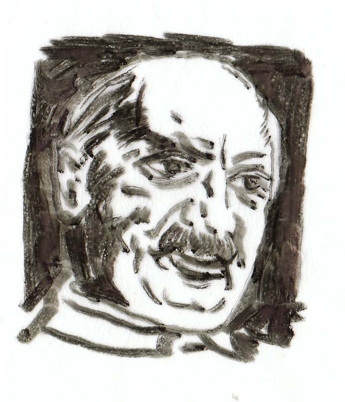
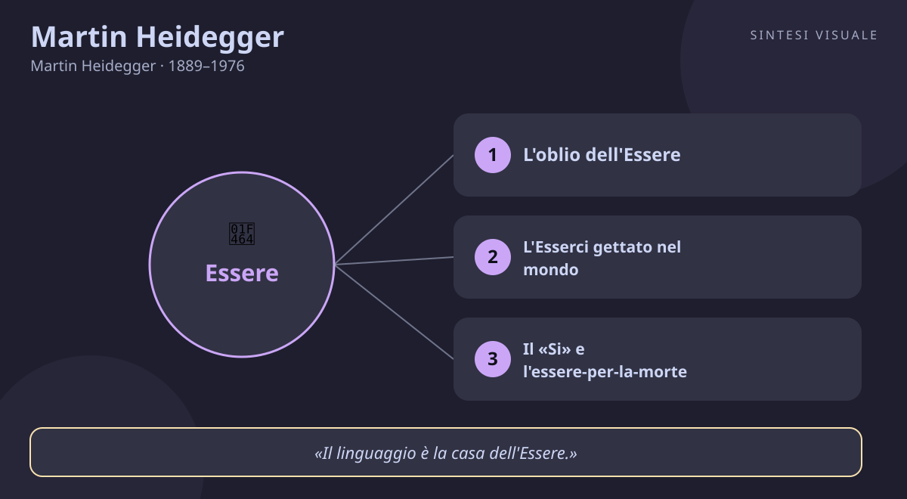

Home / Filosofi / Martin Heidegger

Martin Heidegger
Martin Heidegger · 1889–1976
«La scienza non pensa»
- Esserci
- Autenticità
- Angoscia
- Tecnica
💬La massima
«La scienza non pensa.»
— Martin Heidegger, Che cosa significa pensare? (Was heißt Denken?), corso di lezioni del semestre invernale 1951-52 all'Università di Friburgo
Letta così, sembra una provocazione contro gli scienziati. Heidegger stesso la definisce una «frase che urta» — e subito precisa: non sta dicendo che gli scienziati siano stupidi o pigri, ma che la scienza, in quanto scienza, non si muove nella dimensione del pensiero filosofico. La fisica misura il tempo e calcola le traiettorie dei corpi con precisione straordinaria, ma con i metodi della fisica non può rispondere alla domanda «che cos'è il tempo?». La medicina descrive il corpo, ma non può decidere che cosa significhi essere un corpo, che cosa sia la salute come modo di esistere. Ogni scienza parte da presupposti già dati — spazio, tempo, causa, numero, vita — e li usa senza poterli fondare: il suo oggetto le è consegnato in anticipo.
Immaginala così: la scienza è come un treno velocissimo che corre su binari già posati. Macina chilometri, arriva puntuale, trasporta meraviglie. Ma non è il treno a chiedersi dove vadano i binari, chi li abbia posati e se portino nella direzione giusta. Quella domanda — che cos'è il pensiero, che cos'è l'essere, che cosa stiamo facendo con le nostre stesse scoperte — appartiene a un altro modo di pensare, che Heidegger chiama pensiero meditante (besinnliches Denken), contrapposto al pensiero calcolante (rechnendes Denken) che conta, misura e ottimizza. Nell'epoca dell'intelligenza artificiale e dei numeri che decidono tutto, questa distinzione è più attuale che mai: sappiamo calcolare ogni cosa, ma abbiamo quasi smesso di chiederci che senso abbia calcolarla.
👤Biografia
Martin Heidegger nasce il 26 settembre 1889 a Meßkirch, un paesino cattolico della Germania del sud, figlio di un sagrestano. Da ragazzo entra prima nel noviziato dei gesuiti e poi in seminario: sembra destinato al sacerdozio, ma la salute cagionevole e soprattutto la filosofia lo portano altrove. Studia a Friburgo con Edmund Husserl, il fondatore della fenomenologia, ne diventa l'assistente e nel 1923 ottiene la cattedra a Marburgo. Lì, tra lezioni affollatissime e una celebre relazione con la giovane allieva Hannah Arendt, scrive in pochi mesi il suo capolavoro, Essere e tempo (1927), e diventa d'un colpo il filosofo più discusso d'Europa.
Uomo schivo e contadino nell'anima, si rifugia nella celebre capanna di Todtnauberg, nella Foresta Nera, dove scrive, scia e riceve pochi ospiti. Il punto più oscuro della sua vita arriva nel 1933: aderisce al partito nazista e diventa rettore dell'Università di Friburgo, pronunciando un discorso intriso di retorica del regime. Si dimette dopo un anno, deluso, ma non prenderà mai pubblicamente e chiaramente le distanze da quella scelta — una macchia che pesa su tutta la sua eredità e che ogni lettore deve conoscere. Dopo la guerra gli Alleati gli vietano per anni di insegnare; rientra con seminari privati e conferenze, diventa il maestro della Germania della ricostruzione e muore a Friburgo il 26 maggio 1976, a ottantasette anni.
📌Sintesi del pensiero
Heidegger si chiede una sola cosa per tutta la vita: che cosa significa essere? La filosofia e la scienza, dice, sanno tutto sugli enti — le cose, le persone, i numeri — ma hanno dimenticato l'Essere stesso, cioè il fatto misterioso che le cose siano invece di non essere. L'uomo è l'unico ente che si pone questa domanda, ed è per questo un «pastore dell'Essere». Vivere in modo autentico significa tenere aperta la domanda, accettare la propria finitezza e resistere alla tecnica che riduce tutto a materiale da usare.
🏛️I temi fondamentali
- L'oblio dell'Essere. Per Heidegger tutta la filosofia occidentale, da Platone in poi, ha commesso lo stesso errore: ha studiato gli enti — le idee, Dio, il soggetto, la materia — dimenticando la domanda più semplice e più profonda: che cosa vuol dire che qualcosa è? È come se un bibliotecario conoscesse ogni libro a memoria ma non si fosse mai chiesto che cos'è un libro. La scienza moderna è il punto estremo di questo oblio: sa manipolare tutto, ma non chiede più che cosa significhi esistere.
- L'Esserci gettato nel mondo. L'uomo — che Heidegger chiama Dasein, «Esserci» — non è una mente chiusa in una scatola che osserva il mondo da fuori. Siamo sempre già immersi in un mondo: usiamo martelli senza pensarci, parliamo una lingua che non abbiamo inventato, nasciamo in una famiglia e in un'epoca che non abbiamo scelto. Heidegger chiama questa condizione gettatezza (Geworfenheit). Esempio: nessuno sceglie di nascere italiano nel 1990 o di crescere con uno smartphone in mano — ci si ritrova dentro, e da lì bisogna costruirsi.
- Il «Si» e l'essere-per-la-morte. Nella vita quotidiana viviamo come «si» fa: si dice così, si veste così, si posta così. Questo anonimo dittatore, il Si (das Man), ci rassicura ma ci rende inautentici. A svegliarci è il pensiero della morte: non il macabro, ma la consapevolezza che il mio tempo è limitato e nessuno può morire al posto mio. Chi tiene davanti agli occhi la propria finitezza — dice Heidegger — smette di vivere per inerzia e comincia a scegliere davvero: che lavoro fare, chi amare, come usare gli anni che restano.
- Angoscia e nulla. L'angoscia, per Heidegger, non è la paura di qualcosa di preciso (un esame, un cane). È il momento in cui tutto perde improvvisamente significato: gli oggetti, i progetti, le chiacchiere diventano estranei, e ci si trova faccia a faccia con il nulla. Esperienza scomoda, ma preziosa: solo nell'angoscia capiamo di essere liberi, perché vediamo che nessun ruolo già pronto ci definisce. Chi ha vissuto una crisi — un lutto, una bocciatura, un licenziamento — in cui «niente aveva più senso», ha toccato con mano ciò di cui parla Heidegger.
- La tecnica come destino e i due pensieri. Nell'epoca matura Heidegger non accusa questa o quella macchina, ma un modo di vedere il mondo: la tecnica moderna trasforma ogni cosa — fiumi, boschi, persone — in riserva disponibile, materiale da ottimizzare e consumare. Il Reno diventa solo una centrale idroelettrica potenziale, l'impiegato solo una risorsa umana. A questo pensiero calcolante Heidegger contrappone il pensiero meditante: fermarsi, contemplare, lasciare che le cose siano ciò che sono. Da qui la massima di oggi: la scienza calcola benissimo, ma non pensa nel senso profondo — non si chiede il senso di ciò che fa.
📚Le opere principali
- Essere e tempo (Sein und Zeit, 1927). Tesi centrale: prima di studiare il mondo bisogna studiare colui che se lo chiede, l'Esserci umano, fatto di cura, finitezza ed essere-per-la-morte. Conta perché è il libro che rifonda la filosofia del Novecento: incompiuto ma dirompente, influenza esistenzialismo, ermeneutica e persino psicologia e teologia.
- Che cos'è metafisica? (Was ist Metaphysik?, 1929). Tesi centrale: la metafisica chiede sempre «che cos'è l'ente?» senza mai chiedere del nulla, eppure solo l'esperienza del nulla — nell'angoscia — rivela l'Essere. Conta perché introduce la celebre frase «l'angoscia rivela il nulla» e apre il dibattito che attraverserà tutto il secolo.
- Lettera sull'umanismo (Brief über den Humanismus, 1946). Tesi centrale: l'uomo non è il padrone dell'Essere ma il suo pastore, e «il linguaggio è la casa dell'Essere». Conta perché prende le distanze dall'esistenzialismo alla moda e rilancia la filosofia come custodia del senso, influenzando ermeneutica ed ecologia.
- La questione della tecnica e Che cosa significa pensare? (anni Cinquanta). Tesi centrale: la tecnica non è un insieme di strumenti ma un modo di svelare il mondo che riduce tutto a riserva da sfruttare; e la scienza, che si muove dentro questo schema, «non pensa». Contano perché sono i testi più attuali di Heidegger: parlano direttamente alla nostra civiltà di algoritmi, intelligenza artificiale e crisi ambientale.
💬Massime celebri
«L'angoscia rivela il nulla.» — Che cos'è metafisica? (1929). Conta perché condensa il suo primo pensiero in cinque parole: solo quando tutto perde senso scopriamo la libertà e l'Essere.
«Il linguaggio è la casa dell'Essere.» — Lettera sull'umanismo (1946). Conta perché ribalta l'idea della lingua come semplice strumento: abitiamo nelle parole come in una casa, ed è lì che si decide chi siamo.
«Poeticamente abita l'uomo su questa terra.» — Da Hölderlin, ne Il linguaggio e nei saggi su Hölderlin (1951). Conta perché è il suo invito finale: contro il mondo ridotto a risorsa, l'uomo è chiamato ad abitare la terra con misura e meraviglia, come un poeta.
⌛Contesto storico
Heidegger nasce nel 1889, nell'Impero tedesco di Bismarck e Guglielmo II: un paese di campanili e caserme che in pochi decenni diventa potenza industriale. Cresce in un villaggio cattolico mentre l'Europa corre verso la Prima guerra mondiale, alla quale partecipa brevemente come ausiliario per motivi di salute. Gli anni Venti lo vedono emergere nella Repubblica di Weimar — democrazia fragile, iperinflazione, cabaret berlinesi, radio e cinema — dove la filosofia cerca nuove strade tra le macerie dell'Ottocento: il neokantismo accademico, la fenomenologia di Husserl che invita a «tornare alle cose stesse», l'ermeneutica di Dilthey, la teologia dialettica e, dall'altra parte del Reno, la Scuola di Francoforte.
Poi la catastrofe: la crisi del 1929, l'ascesa di Hitler, il 1933 in cui Heidegger stesso aderisce al regime diventando rettore a Friburgo — scelta che resta la sua colpa storica. Attraversa il nazismo, la Seconda guerra mondiale e la distruzione della Germania, il processo di denazificazione e il divieto di insegnamento, fino alla Germania divisa della guerra fredda, del miracolo economico e della televisione. La società in cui vive passa dal mondo contadino della Foresta Nera alla civiltà dei consumi, delle autostrade e delle centrali nucleari — ed è guardando questa trasformazione che elabora la critica della tecnica. I movimenti che lo nutrono sono la fenomenologia, l'esistenzialismo nascente e la poesia di Hölderlin; quelli che trasmette sono l'ermeneutica di Gadamer, l'esistenzialismo di Sartre, il pensiero di Arendt, la decostruzione di Derrida, la biopolitica di Foucault e Agamben, fino all'ecologia filosofica di oggi.
🌊L'eredità
Dopo la morte, Heidegger resta il filosofo più influente — e più discusso — del Novecento. Jean-Paul Sartre prende da Essere e tempo l'analisi dell'esistenza e la trasforma in esistenzialismo; Hannah Arendt, sua allieva e amante, ne eredita la domanda sul senso dell'agire pur condannandone la scelta politica; Hans-Georg Gadamer ne fa la base dell'ermeneutica, l'arte di interpretare i testi e la storia. Emmanuel Levinas e Jacques Derrida dialogano con lui rovesciandolo: il primo mette l'Altro prima dell'Essere, il secondo decostruisce tutta la metafisica che Heidegger aveva criticato. In Italia Gianni Vattimo ne ricava il «pensiero debole»; la teologia di Bultmann e Rahner, la psichiatria esistenziale e persino l'ecologia profonda bevono alla sua fonte. E oggi, ogni volta che si discute di intelligenza artificiale, sorveglianza o crisi climatica, si parla — consapevolmente o no — il suo linguaggio: tecnica, calcolo, oblio del senso.
🌍Esempi di oggi
- L'algoritmo che decide per te. Il sistema ti suggerisce cosa guardare, cosa comprare, chi frequentare, e tu clicchi senza pensarci: è il pensiero calcolante al lavoro, efficientissimo, che però non si chiede mai se quella vita ti renda felice. Il pensiero meditante di Heidegger comincia con un gesto minimo: fermarti un'ora senza schermo e chiederti «che cosa voglio davvero fare stasera?».
- La riunione piena di numeri. In ufficio si parla solo di indicatori, percentuali e ottimizzazione: quante pratiche chiuse, quanti clic, quanto fatturato. Nessuno chiede più a che cosa serva il lavoro che fate. La massima di oggi ti ricorda che i numeri misurano tutto tranne il senso: una volta al mese, prova a chiedere al tuo gruppo «perché facciamo questo?» — quella è la domanda che la scienza dei dati non può calcolare.
- La scelta dopo la crisi. Dopo un licenziamento o la fine di una storia, crolla il tran tran del «si fa così» e resta l'angoscia: niente ha più senso. Heidegger direbbe che è un momento di verità, non solo di dolore: spariti i copioni già scritti, puoi finalmente sentire che cosa conta per te e ricominciare da una scelta tua, autentica — l'essere-per-la-morte trasformato in bussola di vita.
🧠Quiz
Metti alla prova quello che hai imparato! Rispondi in chat con es. 1B 2A 3C 4D 5A.
1 Cosa significa la massima «la scienza non pensa»?
2 Che cos'è l'Esserci (Dasein) e la gettatezza?
3 Chi è il «Si» (das Man) e che rapporto ha con l'autenticità?
4 In quale contesto storico matura il pensiero di Heidegger?
5 Cosa distingue il pensiero calcolante da quello meditante?
✅Soluzioni — tocca per vedere
1C – 2B – 3C – 4B – 5C
🔁Ripasso
- Scienza e pensiero: se hai sbagliato la 1, ricorda il treno sui binari: la scienza corre velocissima ma non posa i binari — il senso del viaggio va chiesto altrove, al pensiero meditante.
- Esserci e Si: se hai sbagliato la 2 o la 3, pensa alla lingua che parli senza averla inventata (gettatezza) e al «si fa così» dei social (il Si): autentico è chi, ricordandosi che il tempo è limitato, sceglie da sé invece di copiare.
- Tecnica e angoscia: se hai sbagliato la 5, ricorda il fiume ridotto a centrale elettrica e la crisi in cui «niente ha più senso»: il calcolo usa il mondo, solo la sosta meditante — e l'angoscia che rivela il nulla — restituiscono il senso.
🖼️In un colpo d’occhio

Tocca l’immagine per ingrandirla.